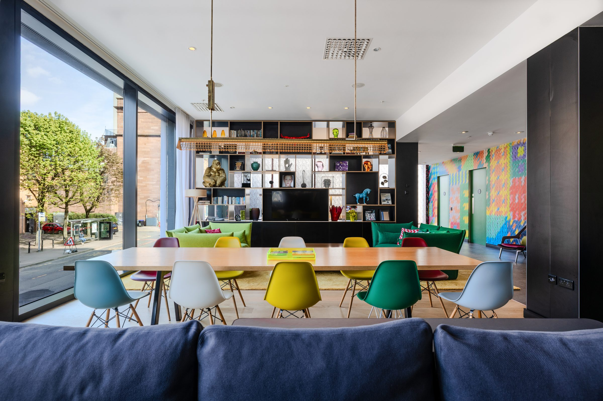
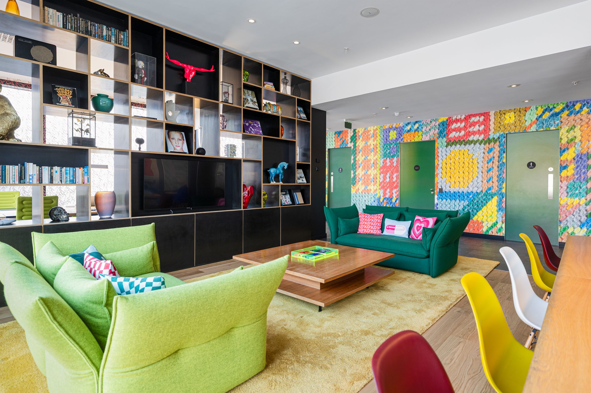
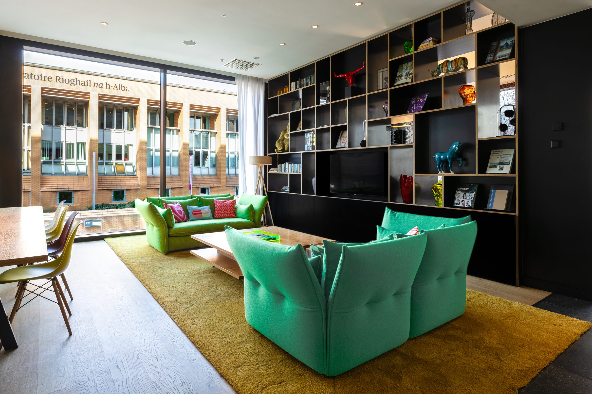
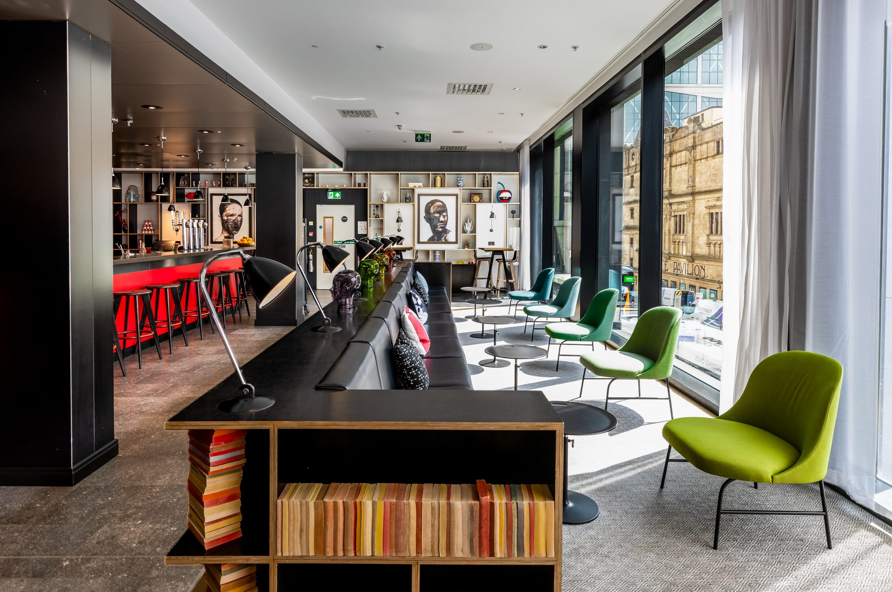
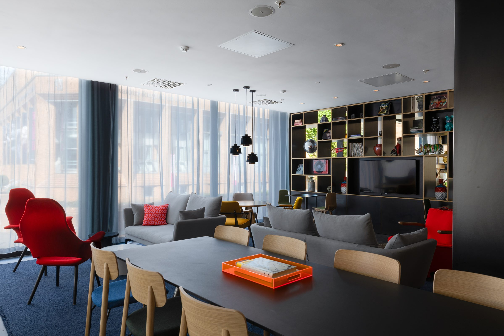
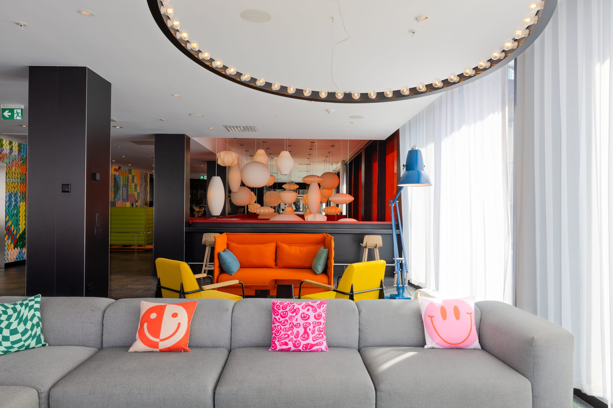

Glasgow
[Two or three lines: the brief, what was delivered, how the images are used.]



[Optional caption — e.g. the bar and work lounge on the first floor.]



[Two or three lines: the brief, what was delivered, how the images are used.]



[Optional caption — e.g. the bar and work lounge on the first floor.]


